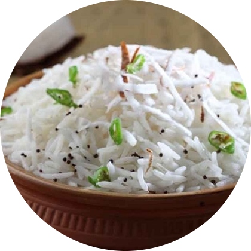
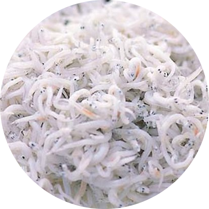

Aunu Senebre
Aunu Senebre adalah makanan tradisional yang berasal dari Papua. Aunu senebre terbuat dari bahan dasar berupa ikan teri nasi yang dicampur dengan irisan daun talas.

Bahan-Bahan
1/4 sdt garam
1 batang daun talas dan batangnya, diiris
100 gr kelapa parut kasar
100 gr ikan teri nasi, dicuci bersih, serta digoreng sebentar
Cara Membuat
1. Pertama, rebus daun talas dan batangnya hingga matang;
2. Angkat rebusan daun talas dan tiriskan;
3. Campurkan ikan teri nasi dan daun talas serta batangnya. Masukkan pula kelapa parut kasar dan garam. Aduk hingga merata;
4. Kukus bahan-bahan tersebut sekira 30 menit dengan api sedang hingga matang;
5. Bila sudah, angkat dan sajikan.
